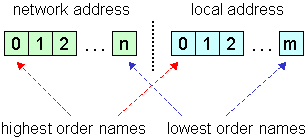

Location class
| Description | Absolute address of entries (file, folder, link) in the file system. Details... |
|---|---|
| Module | InputOutput |
| Base classes | GS::Object |
| Derived classes | - |
| Header | Location.hpp |
Public methods
Constructors
Copy constructor
operator=
static New
State query
GetStatus
Global setting / query
Set
Clear
IsEmpty
Network address operations
GetNetworkName
SetNetworkName
GetLastNetworkName
SetLastNetworkName
AppendToNetwork
DeleteNetworkName
DeleteLastNetworkName
MoveLastNetworkName
ClearNetwork
GetNetworkLength
IsLocal
Local address operations
GetLocalName
SetLocalName
GetLastLocalName
SetLastLocalName
AppendToLocal
GetDifference
DeleteLocalName
DeleteLastLocalName
MoveLastLocalName
ClearLocal
GetLocalLength
IsRoot
Comparing
operator==
operator!=
IsAncestorOf
Conversions
ToPath
ToPOSIXPath
ToFSRef
ToCFURL
ToFSSpec (Obsoleted)
ToURL
ToDisplayText
Platform dependency support
IsLegal
IsMultiplatform
I/O
Read -> GS::Object
Write -> GS::Object
Debug
Print -> GS::Object
Description
Location is address or path of entries (file, folder, link) in the file system. File system is hierarchical structure (tree) of file system entries, where internal nodes are folders (or machines and subnetworks) and leaf nodes are files or empty folders. (Note that term file system is generalized to include the whole network, while the term local file system refers to the traditional file system of a standalone machine.) Every entry has a Name associated with it, which is unique within its context (in its parent folder). Because file system is a tree, there is a single unambiguous path from the root of the file system through internal nodes (folders, machines or subnetworks) to the particular entry, yielding sequence of names. Location in fact is a sequence of names, but it can refer to nonexisting entries (user can build arbitrary locations). Structure of the location is the following:

Location has two main parts: network address and local address. Each address consists of arbitrary long sequence of names, and each name consists of arbitrary long sequence of characters. These addresses can be freely manipulated with several methods. Network address determines location of the machine containing the particular entry on the network. If the network address is empty, then location is treated local, which means that it refers to the local file system of the current machine. Local address determines location of the particular entry inside the local file system of the given machine. If the local address is empty, then location refers to the root of the local file system of the given machine. Note that this root is virtual on some platforms, e.g. on Windows and Macintosh it contains volumes (logical drives).
Although generally there is no any restriction related to the content of a location, there can be some at the point of use on the particular platform. For example when creating a file, it is not allowed on Windows for its location to contain some special characters like '|' or '*'. User can check whether is a location syntactically legal on the current platform (with IsLegal method) or on every platform supported by InputOutput module (with IsMultiplatform method). Syntactically legal means simply that a file system entry with such location may exist, and not that it actually exists.
Locations can be permanently saved and restored later. Locations can be ported between different platforms with some restrictions. (Note that as far as a Location object in isolation is considered, its content can be always properly restored and manipulated later, but at point of actual use it can turn out to be unusable on the particular system.) First, location must be multiplatform according to the IsMultiplatform method. Multiplatform local locations are portable. Second, there are some restrictions to the network protocol. The following table summarizes portability (and restorability) properties. It specifies whether is possible to properly use a Location object saved on a system with Source network protocol on the system with Target network protocol. Proper using means that entry referred to by the original location can be properly accessed (referred to) on the target system.
Source \ Target
Windows
Mac: AppleTalk
Mac: TCP / IP
Mac: Other (e.g. Dave)
Windows OK OK* Volume must be mounted Volume must be mounted Mac: AppleTalk OK OK OK OK Mac: TCP / IP OK OK OK OK Mac: Other
(e.g. Dave)- OK OK OK * Currently one level flat network model is supported by Windows, that is only server name is used (there are no subnetworks). Macintosh AppleTalk is a two level zone-server network model. When porting from flat to zone-server model, search is performed in all of the zones for the given server, which may take some time. However, when the server is found, then the volume is mounted, so subsequent references can be resolved without searching. Naturally servers with the same name in different zones may lead to unpredictable results.
Location represents an absolute address (at least absolute to the local machine). Sometimes it is more convenient to deal with one absolute and more relative addresses. This is supported by the class RelativeLocation. A relative location can be manipulated, saved, restored and finally appended to an absolute location.
Implementation of the Location class is highly optimized both to space and speed. Copy constructor and assignment operator are fast and do not require additional heap space. Internally, locations are stored in a common shared tree. Similar locations require additional space only for different segments.
Note: in every method where const Name& is expected, C string can be also passed, because there is implicit conversion from char* to Name.